Host laitteisto
- Prosessori: AMD Ryzen 9 5900x 12-Core
- Keskusmuisti: 32GB DDR4
- Näytönohjain: NVIDIA GeForce RTX 3080
- OS: Linux 7.2.11-1-cachyos x86-64
Virtuaalikone, local
- 4 CPU
- 6GB RAM
- 20GB
- Debian 13, 64-bit
Harjoitus 3: Demoni (Karvinen 2026a)
x) Tiivistelmä
Karvinen 2026: Apache installed with Ansible (Karvinen 2026b)
- Paketti-tiedosto-palvelu malli: Lataa demoni, muuta konfiguraatiota, käynnistä se
-
Konfiguraatio tiedosto elää yleensä polussa
/etc/{palvelun-nimi} -
Palvelu voidaan käynnistää uudestaan esim.
sudo systemctl restart apache2 - Muutokset astuvat voimaan vasta kun demoni on käynnistetty uudestaan
-
Ansiblella yleensä tarvitset
roles/{rolename}/files kansion erilaisia konfiguraatio tiedostoja varten, kuten handler-kansio demonien uudelleen käynnistystä varten
Ansible Community Documentation: Handlers: running operations on change (Ansible Community Documentation)
- Handlerit ajetaan vain jos jotain muutoksia tapahtuu
- Yleensä käytetään palvelujen/demonien uudelleen käynnistämiseen
- Käytetään notify-avainsanan kanssa
- notify ottaa listan handlerien nimiä
- Handlerit suoritetaan siinä järjestyksessä kuin ne ovat handlers tiedostossa, ei siinä järjestyksessä kuin ne ovat listattuna notify komennossa
'ansible-doc service'
- service kontrolloi palveluja etä koneilla
- Toimii välittäjänä palvelu manager moduulille
- Enabled: Pitääkö palvelun käynnistyä järjestelmän käynnistyksen yhteydessä
- Name: Palvelun nimi
- State: Jompi kumpi, state tai enabled, on pakollinen. Started, stopped ajaa palvelun vain jos on pakko. Restarted aina uudelleenkäynnistää palvelun. Reloaded aina lataa uudestaan palvelun.
a) Apassi (Karvinen 2026a)
Asennetaan Apache käsin. Käytän tähän apuna Karvisen
Apache installed with Ansible - quick notes (Karvinen 2026b)
sivua, vaikka se onkin tarkoitettu ansiblelle. Aloitan asentamalla
apachen komennolla sudo apt-get -y install apache2.
Tarkistan vielä komennolla
sudo systemctl status apache2 että apache on asennettu ja
päällä. Tarkistan myös että apache kansio löytyy osoitteesta
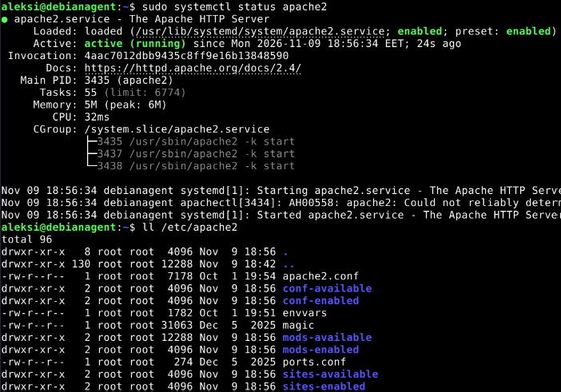
Seuraavaksi tarkistin mitä curl localhost tulostaa. Se
tulostaa tekstin Default web site!. Se jäi luennon aikaisilta
caddy kokeiluilta tiedostoon cat /var/www/html/index.html.
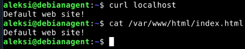
Seuraavaksi muokkasin apachen oletus konfiguraatiota oletus sivulle
lokaatiossa
sudo systemctl restart apache2, tarkistin että apache on
varmasti käynnistynyt uudestaan komennolla
sudo systemctl status apache2, ja näemme rivin
Active: lopusta, että demoni on ollut käynnissä 5 sekuntia.
Apache on siis käynnistynyt uudestaan ja uudet konffaukset on otettu
käyttöön. Tarkistin nyt verkkosivun komennolla
curl localhost. Sain 403 forbidden.
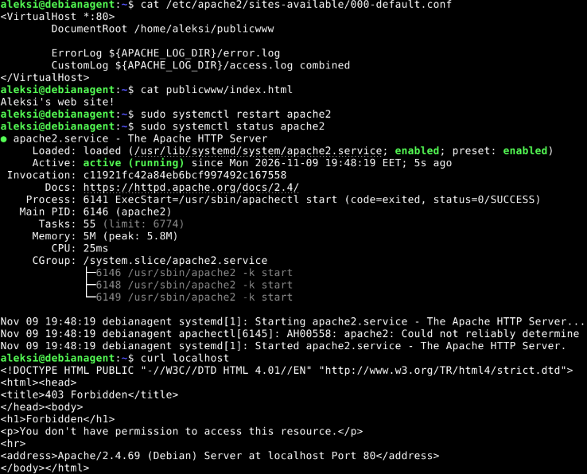
Lähdin tarkistamaan Karvisen ohjeista (Karvinen 2026b), mille hänen *.conf tiedostonsa näytti, ja huomaan että itseltäni on unohtunut require all granted pois konfiguraatio tiedostosta. Lisäsin kohdan konfiguraatio tiedostoon, käynnistin apachen uudelleen ja kokeilin hakea webbisivua taas curl-komennolla. Tällä kertaa webbisivu tulostuu oikein.
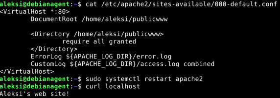
b) Moottorix (Karvinen 2026a)
Ensiksi sammutin apache palvelun komennolla
sudo systemctl stop apache2. Nginx latasin komennolla
sudo apt-get -y install nginx. Tarkistin meneekö nginx
päälle samantien asentamisen jälkeen kuten apache komennolla
sudo systemctl status nginx ja huomasin että nginx on
päällä. Tarkistin verkkosivun komennolla
curl localhost ja sieltä tulikin oletussivun tuloste.
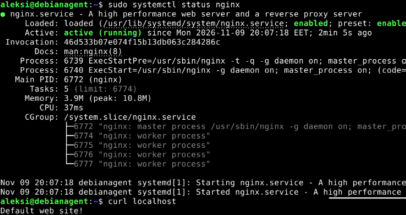
Nginx tiedosto rakenne toimii hyvin samalla tavalla kuin
apachella. Konfiguraatio tiedostot löytyvät
sudo systemctl restart nginx, jotta muokkaukset otetaan
käyttöön. Tarkistin ja vahvistin uudelleenkäynnistyksen
sudo systemctl status nginx komennolla.
curl localhost komennolla tarkistin, että verkkosivu
näyttää nyt aleksi-käyttäjän webbisivun, eikä oletus webbisivua.
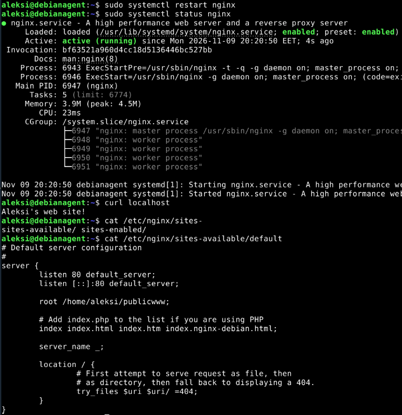
Huomasin, että nginx oli hieman apachea helpompi ottaa käyttöön. Nginx:lle riittää, että kansioilla ja tiedostoilla on oikeat oikeudet määriteltynä others kohtaan. Apache vaati require all granted-tekstin konfiguraatio tiedostoonsa.
c) Automoottorix (Karvinen 2026a)
Automatisoidaan Nginx asennus Ansiblella. Ensiksi tein tiedosto
rakenteen kuntoon, eli tein
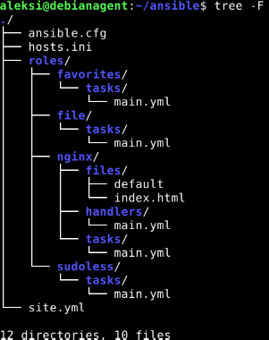
Tein myös muutoksia hosts.ini-tiedostoon. Lisäsin web sekä users-hostit. Aiemmin tehdyn anssin lisäsin users-hostin alle ja lisäsin uuden käyttäjän, webbisivu, ryhmään web. Webbisivu käyttäjä tehdään nginx roolissa. Muokkasin myös site.yml tiedostoa ja annoin järkevät roolit hosteille.
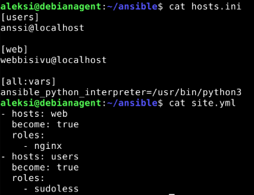
Files kansion default tiedosto on yksinkertainen konfiguraatio
tiedosto, jossa määritellään verkkosivun tiedostojen sijainniksi
webbisivu-käyttäjän kotihakemistossa oleva
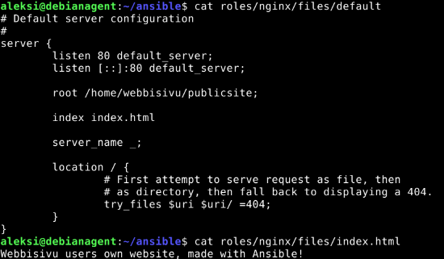
Handler tiedosto käynnistää nginx:n uudelleen.
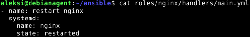
Ajoin ansiblen nyt komennolla
ansible-playbook site.yml -K. Törmään kuitenkin
vihreilmoitukseen, ettei nginx voitu käynnistää.
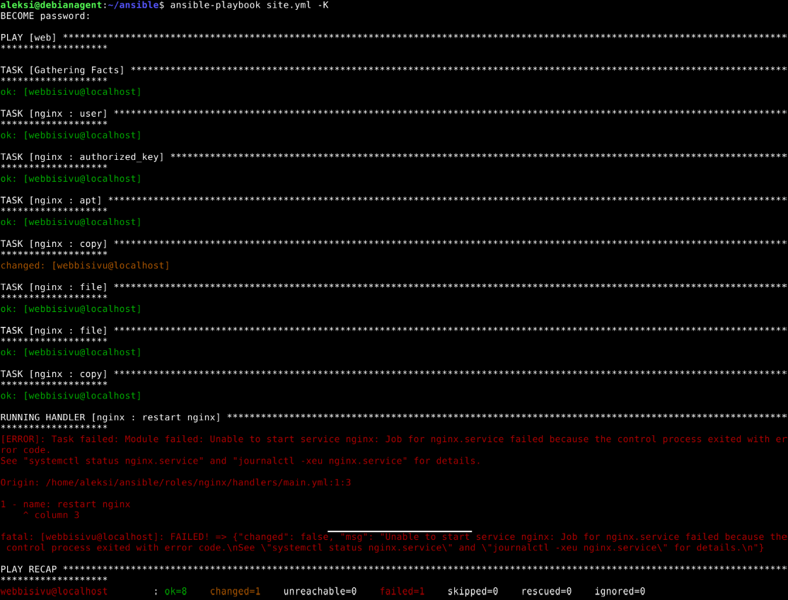
Katson tarkemman virheilmoituksen komennolla
sudo journalctl -xeu nginx.service. Sieltä löydänkin,
että jokin muu käyttää jo porttia 80. Arvelen, että se on Apache, joka
on käynnistynyt virtuaalikoneen uudelleenkäynnistyksen yhteydessä,
koska se on ollut enabled tilassa. Komennolla
systemctl status apache2 varmistan epäilyn todeksi.
Laitan apachen tilaan, ettei se enää käynnisty uudelleenkäynnistyksen
yhteydessä, komennolla sudo systemctl disable apache2 ja
pysäytin apachen komennolla sudo systemctl stop apache2.
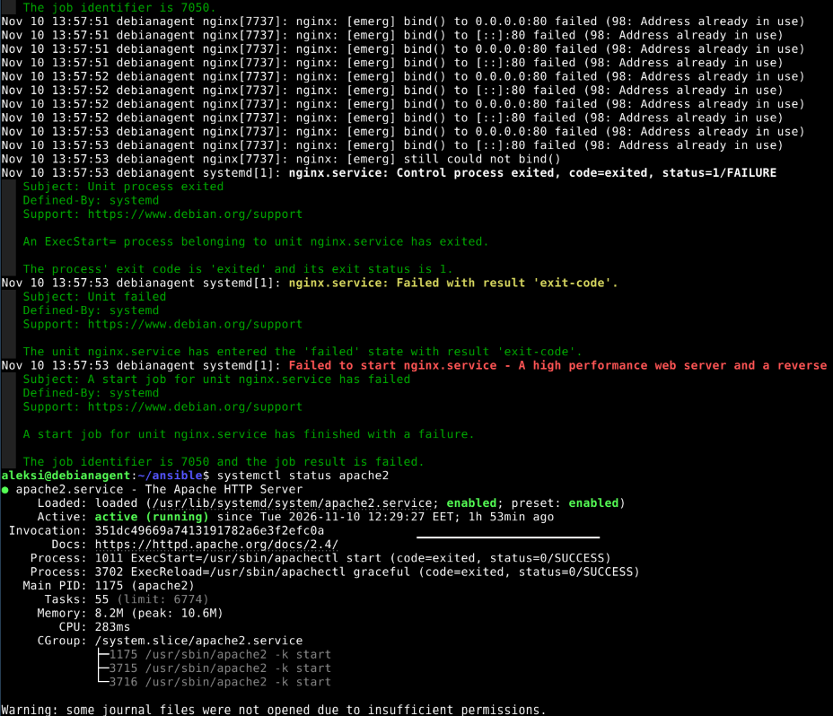
Lisään
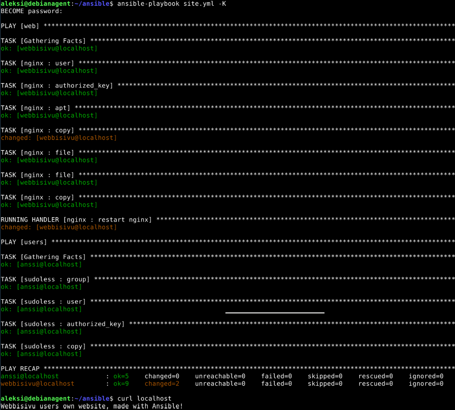
d) Vapaaehtoinen bonus: Osiris-T (Karvinen 2026a)
En tällä kertaa tee vapaaehtoista tehtävää ainakaan vielä
Tehtävänanto (Karvinen 2026a)
- a) Apassi. Asenna Apache 2 käsin. Weppisivun tulee näkyä palvelimen etusivulla. Sivun tulee olla tavallisen käyttäjän muokattavissa, ilman root- tai sudo-oikeuksia.
- b) Moottorix. Asenna Nginx käsin. Weppisivun tulee näkyä palvelimen etusivulla. Sivun tulee olla tavallisen käyttäjän muokattavissa, ilman root- tai sudo-oikeuksia. (Muista sammuttaa Apache ensin.)
- c) Automoottorix. Automatisoi Nginx asennus Ansiblella. Ylläpitäjän osuus Ansiblella riittää, itse HTML-weppisivut voi tehdä käsin.
- d) Vapaaehtoinen bonus: Osiris-T. Osiris-T asentaa Wazuhin ja tarvittavat virtuaalikoneet. Voit lähettää vihamielistä verkkoliikennettä (tcpreplay), siepata sen (suricata) ja saat tulokset suoraan dashboardille (wazuh). Enemmän alpha kuin se kreikkalainen kirjain. Mutta Oskari, Nico ja Arttu ilahtuvat, jos kokeilet. Häkämies, Saario, Mukkula 2026: Osiris-T. Häkämies etal 2026: How to Install.
Lähteet
- Karvinen, Tero 2026a. h3 Demoni. Luettavissa: https://terokarvinen.com/palvelinten-hallinta/#h3-demoni. Luettu: 6.11.2026
- Karivnen, Tero 2026b. Apache installed with Ansible. Luettavissa: https://terokarvinen.com/apache-ansible/ . Luettu: 6.11.2026
- Ansible Community Documentation. Handlers: running operations on change. Luettavissa: https://docs.ansible.com/projects/ansible/latest/playbook_guide/playbooks_handlers.html. Luettu: 7.11.2026